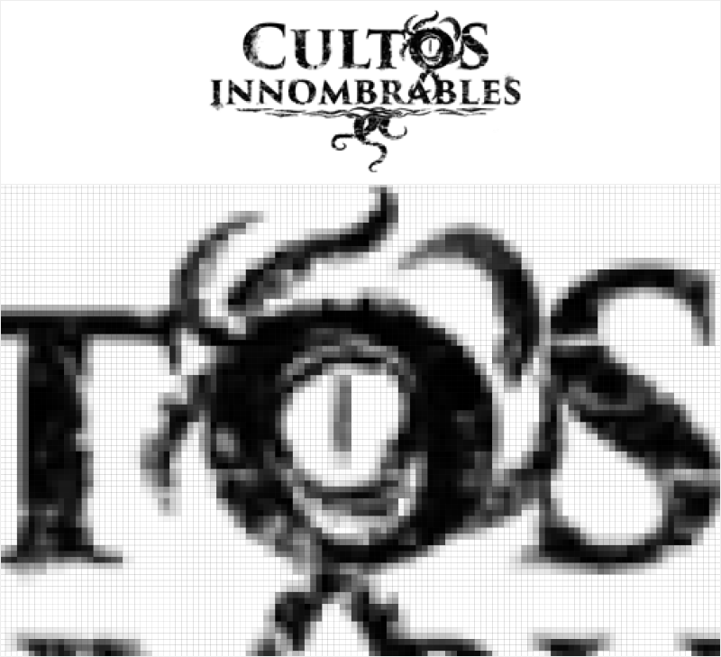
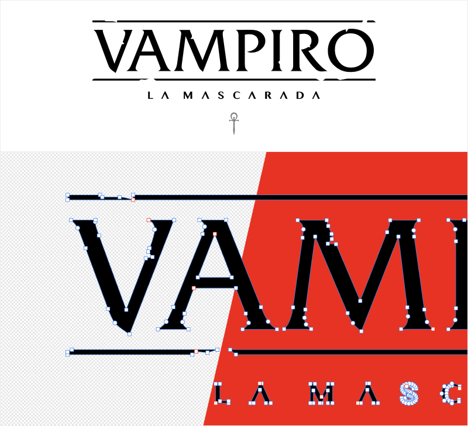

Buscando logos de juegos de rol en 2022
Vuelve a la homeEste mes me he encargado de hacer las portadas de las partidas de marzo de Resistencia Lúdica y me puse como meta mejor algunos de los logos de sistemas de juego que ya teníamos. Qué podría salir mal?
Spoiler: TODO.
Para alguien que lleva ya unos años en desarrollo web y ha visto, de alguna manera, el triunfo del formato SVG un poco al carro de las pantallas de alta definición de píxeles el mundo del rol es como una vuelta al oscurantismo de los 2000 en los que ni el cliente sabía si tenía su logo fuera de su tarjeta de visita, y mucho menos en vectorial.
En mundo rol se nota que faltan medios y que el nivel técnico ha sido consumido por la aventura, la investigación y la audacia. Esta gente te plantea mundos plagados de horrores y posibilidades infinitas. Te acompaña si hace falta a las puertas del infierno o al planeta más lejano. Te enseña a crear un personaje capaz de destruir a un ejército de sectarios o de invocar a la criatura más mortal que puedas imaginar... pero los logos son bitmap y se sigue usando RAR para comprimir las cosas.
Las imágenes pueden ser de dos tipos: bitmap o vectorial.
Las bitmap son un conjunto de cuadraditos de colores con el tamaño que tienen y ya; a más detalle o tamaño, pesan más.
Las vectoriales son un conjunto de datos de nodos, posiciones, manecillas, colores, etc. que representan una imagen que puedes aumentar sin pérdida de calidad, ocupan y pesan mucho menos.
Un ejemplo de imagen bitmap sería el logo de Cultos Innombrables: 
Encontrarlo a buena calidad/tamaño y con fondo transparente ya es un pequeña proeza, pero además ser capaz de invertirle los colores (que se puede) es un extra importante.
En la imagen se puede ver el logo completo y un detalle ampliado para ver el tema bitmap con los píxeles como puños. Obviamente en píxeles te puedes lucir más con el desgaste de las letras, pero complicas que, de manera no profesional, lo puedas usar en tus partidas para que los jugadores identifiquen el sistema de juego.
Y un ejemplo de imagen vectorial lo tendríamos en el logo de Vampiro: 
Hay menos detalles pero ponerle un fondo, ampliarlo o reducirlo de tamaño sin pérdida de calidad, o cambiarlo de color son tareas súper fáciles.
En web esto lo tenemos bastante superado llegando en casos extremos a tener versiones bitmaps muy concretas y vectoriales para uso a blanco y negro, y en diferentes formatos (cartelería de gran tamaño, camionetas, etc.).
Entonces, cómo consigo un buen logo de mi sistema de juego favorito en este nuestro 2022?
Para ello vamos a rescatar viejos trucos de webmaster callejero:
El PDF
En mundo rol se aplican las mismas reglas que en mundo papel (edición gráfica en papel) y aunque muchas veces "nadie" tenga el logo a buen tamaño o vectorial suele pasar que están en el PDF de reglas de juego, hoja de personaje, campañas o one-shots... Y SUELEN SER EDITABLES!
Es cierto que muchos de estos archivos PDF son de pago, y estando mal ocurre que muchos están disponibles por diferentes razones. Algunos, como las hojas de personaje (editables o no) suelen ser gratuitos.
Pues bien, estos archivos suelen estar desprotegidos y para el aguerrido profesional del diseño medio es un juego abrirlo y extraer todos sus secretos, en concreto, el logo VECTORIAL.
La tipografía
Antes hablaba de los medios en mundo rol y muchas veces pasa que se sacan sistemas de juego sin muchos miramientos y hay bastantes posibilidades de que el logo de ese sistema tan chulo sea el nombre con una tipografía curiosa que casi seguro es gratuita. Cualquier con medio ratón, dos clicks y un programa de edición va a poder recomponerlo, convertirlo a curvas y TA DA!
Todo ha fallado y hay que vectorizar
Vectorizar es convertir en vector lo que no lo es. Hay una serie de aplicaciones capaces de hacerlo, y hay una combinación que me gusta bastante por los buenos resultados.
Ante todo hay que aceptar que todo lo anterior falló, pero nunca aceptar la derrota. NUNCA.
Vamos a buscar el logo más tocho que encontremos y lo limpiaremos lo mejor posible. Si podemos convertirlo a blanco y negro, mejor!
Generamos una imagen y la abriremos con Adobe Capture, que aunque es el mal tb es gratis. Esta aplicación vectoriza bastante decentemente y nos permite enviarnos/descargar una versión en SVG.
Es callejero? Lo es, pero más triste es tener un truño de logo.
Y hasta aquí hemos llegado. Sigue estos pasos o comenta algunos alternativos y hagamos que el mundo, en este caso el del rol, luz un poco más definido. O qué?